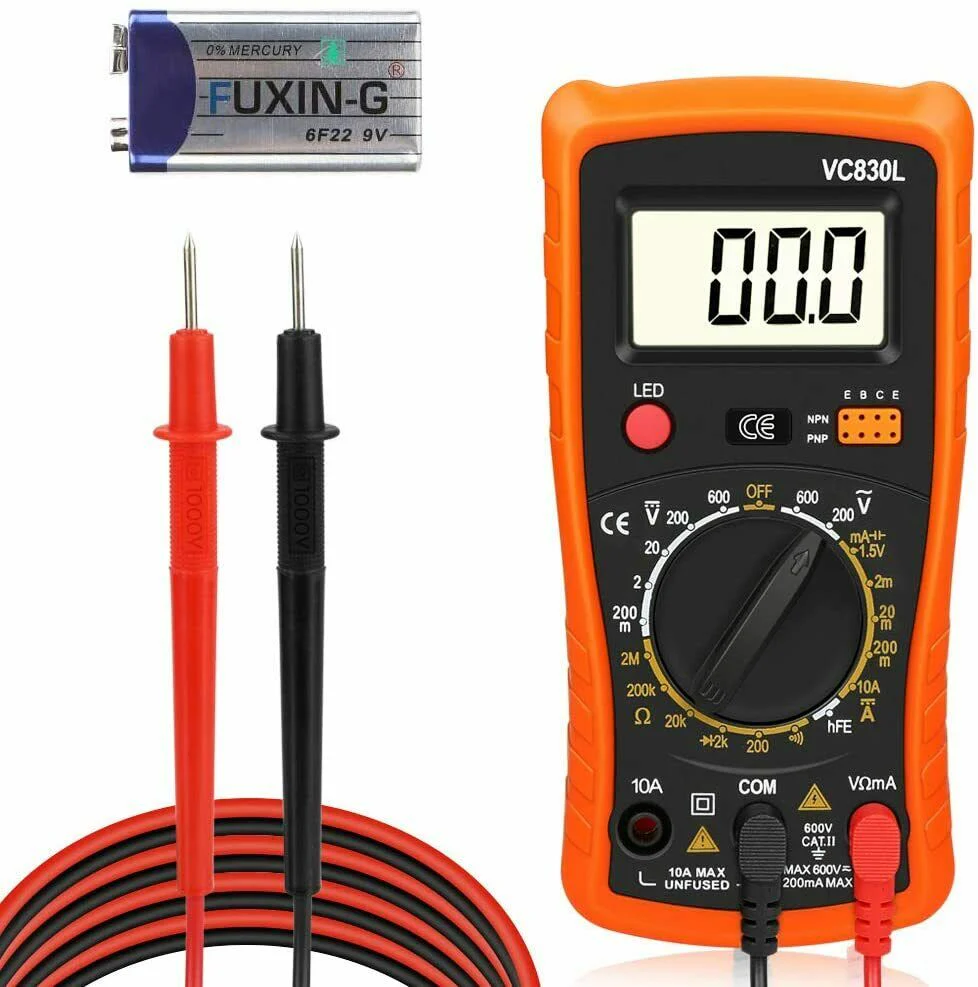
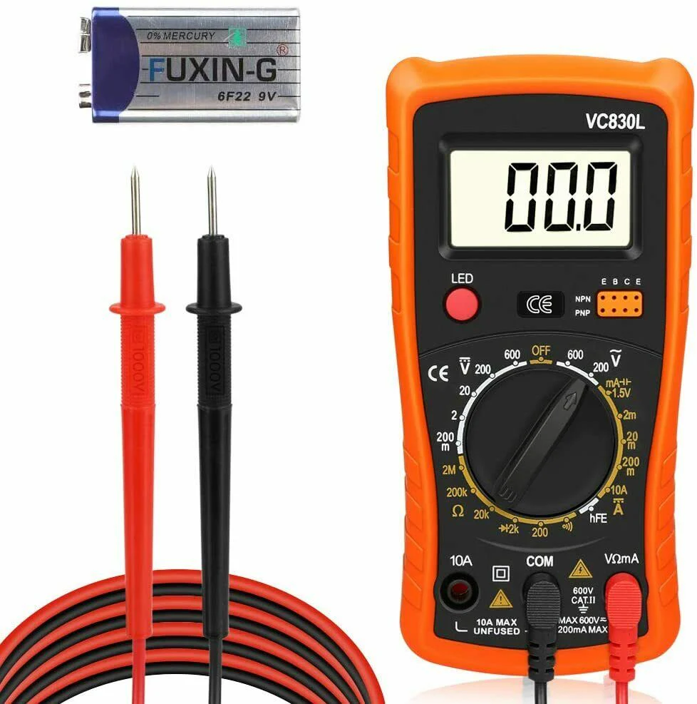

Definizione
Tensione elettrica, o differenza di potenziale elettrico (ddp), è la grandezza fisica che rappresenta la quantità di energia necessaria per spostare una carica elettrica unitaria tra due punti di un circuito. In termini più semplici, è la "pressione" o la "spinta" che spinge gli elettroni a muoversi in un conduttore, generando così la corrente elettrica.
 
